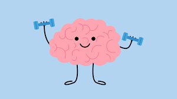

Mental Health in 2026: Simple Tips That Actually Make a Difference
Mental health is no longer a topic people whisper about. In 2026, awareness around emotional wellbeing has never been higher and for good reason. Stress, anxiety, and burnout affect millions of people every day, across every age group and profession.
The good news is that improving your mental health does not always require major life changes. Small, consistent habits can have a powerful impact on how you think, feel, and cope with everyday life. Here are some practical, research-backed tips to help you take care of your mind.

1. Spend Time in Nature
Research consistently shows that spending time outdoors reduces stress hormones and improves mood. Whether it is a walk in a local park, sitting by a tree, or simply stepping outside for fresh air nature has a calming, grounding effect on the mind.
In Japan, a practice called "forest bathing" involves slowly walking through a forest while engaging all your senses. Studies suggest this can lower blood pressure and reduce anxiety. You do not need a forest — even a few minutes in a green space can help.
2. Prioritise Quality Sleep
Sleep and mental health are deeply connected. Poor sleep worsens anxiety, reduces emotional resilience, and makes it harder to think clearly. Adults need between 7 and 9 hours of sleep per night.
To improve your sleep, try developing a relaxing bedtime routine, avoiding screens and caffeine before bed, and keeping consistent sleep and wake times even on weekends. A cool, dark, and quiet room makes a significant difference.
3. Move Your Body Regularly
Physical activity releases endorphins hormones that naturally lift your mood and reduce feelings of stress and anger. You do not need to be an athlete to benefit. Walking, dancing, cycling, yoga, or even household chores all count.
Exercise also improves sleep quality and helps you feel better about your body. If it involves other people a class, a team, or a regular walking group the social connection adds another mental health boost.
4. Talk to Someone You Trust
Many people have been taught to keep difficult feelings to themselves. But bottling things up can increase stress and feelings of isolation. Simply talking things through with a trusted friend, family member, or colleague can provide relief and perspective.
If you feel professional support would help, reaching out to a therapist or counsellor is a sign of strength, not weakness. Many free and low-cost services are available both online and in person.
5. Quick Daily Tips to Try
- Try box breathing: Inhale for 4 seconds, hold for 4, exhale for 4, hold for 4. Repeat whenever you feel overwhelmed.
- Journal for 10 minutes: Write down whatever is on your mind. Notice how you feel afterwards.
- Practice gratitude: Write down three things you are grateful for each morning to shift your mindset positively.
- Limit social media: Set screen time limits and avoid scrolling before bed to protect your focus and mood.
- Drink enough water: Dehydration affects concentration and mood more than most people realise. Aim for at least 8 glasses a day.
- Do one act of kindness: Research shows that helping others boosts your own mood and strengthens your sense of connection.

Small Steps, Big Changes
Mental health is not about being happy all the time. It is about building the tools, habits, and connections that help you handle life's challenges with more ease and resilience.
You do not need to overhaul your entire lifestyle overnight. Pick one or two tips from this list and start there. Consistency matters far more than perfection. Over time, small daily actions add up to a genuinely healthier, more balanced mind.
Remember taking care of your mental health is not a luxury. It is one of the most important things you can do for yourself and for the people around you.